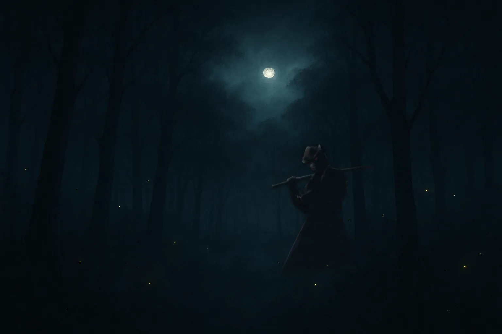

5つの選択が虚ろの森に道を引く。どの道に正解も失敗もなく、ただ誰のものとも違う、あなた自身の旅となる。
しんしんと、音もなく夜が降る。
あなたは寝床に身を伸ばし、ただ目を閉じていた。
その無音に、ひとすじの声が差し込む。
「其方、虚ろの夜を渡る気か」
闇を纏った修羅王丸が 赤い瞳でこちらを見つめている。
気づけば、あなたは黒い森の縁に立っていた。
「ならば、余が導こう。ただしこれは夢ではない。仮想にして、真の旅よ」
夜の森で、修羅王丸が手招く。あなたは歩を合わせる？
夜歩きの支度：音が邪魔ならミュートを。小さく流すのも一興だ。
※ 自動再生制限により、最初のクリックまで音は鳴りません。